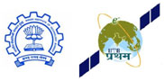

Virtual Laboratory in Satellite Modeling & Simulation
Offered by
“IIT Bombay Student Satellite Project (ISSP)”
Indian Institute of Technology Bombay, Mumbai
Project Sponsored under the
National Initiative on ICT in Education of
Ministry of Human Resource & Education
Through
Centre for Distance Engineering Education Programme of IIT Bombay
Indian Institute of Technology Bombay, Mumbai
Ministry of Human Resource & Education
About ISSP
“IIT Bombay Student Satellite Project (ISSP)” started as an initiative of UG students in July 2007 and aims to conceive, design and develop a micro-Satellite named ‘Pratham’ and get it into orbit with the help of ISRO. This project has turned out to be a great binding factor for several highly motivated students drawn from different departments of IIT Bombay.
ISSP has provided valuable learning opportunity to large number of students of the institute. Moreover, it is the intention of ISSP to extend this learning opportunity to a wider segment of student community through the distance learning mode. Virtual Laboratory in Satellite Modeling & Simulation offers Distance Learning Opportunity in Satellite Technology through a set of online experiments. In this laboratory, students can perform experiments with the same tools that helped ISSP team to learn about Satellites; these are the same tools that helped ISSP team to design Pratham the Satellite that is taking shape at IIT Bombay.
Virtual experiments covering temperature distribution on the body of the Satellite, control of the Satellite in space and electron density in the ionosphere measured with the Satellite will be available in a phased manner at Virtual Laboratory in Satellite Modeling & Simulation. Enjoy this experience.
COME LEARN ABOUT SATELLITES!
